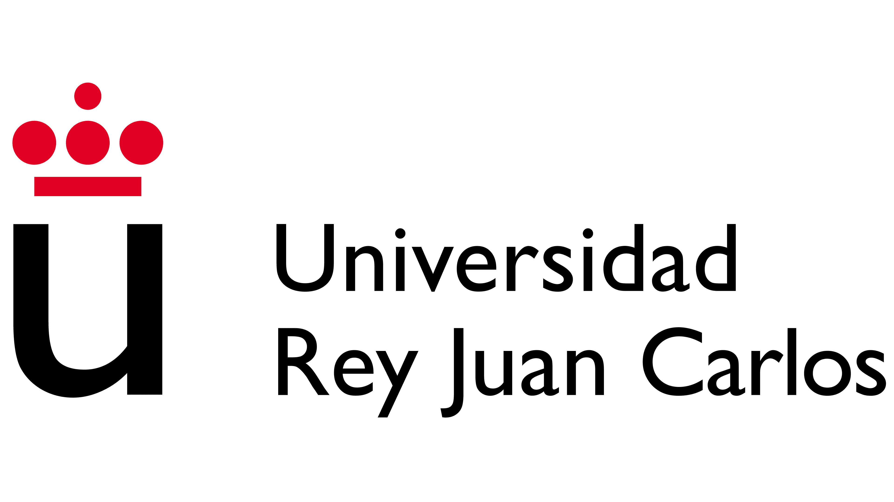

Científico medioambiental con dos años de experiencia. Creo que mi experiencia en investigación me da una visión más proactiva y una mejor comprensión de la ejecución de proyectos, así como una mayor capacidad para adaptarme a cambios.Actualmente estoy buscando nuevos retos para mejorar mis habilidades.
| Técnico de investigación |
|
Investigador en prácticas |
|
| ESRI España |
MásterGIS presencial | Universidad Rey Juan Carlos  |
Máster en Técnicas de Conservación de la Biodiversidad y Ecología |
| Universidad Rey Juan Carlos |
Grado en Ciencias Ambientales |